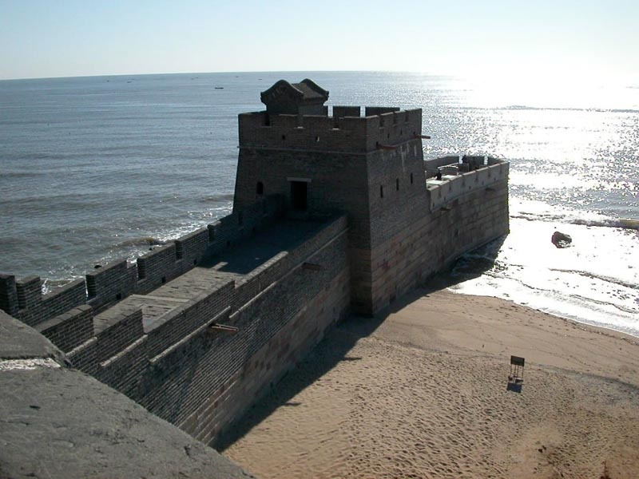

Great Wall of China
Aug 14, 2020
The Great Wall of China (Chinese: 萬里長城; pinyin: Wànlǐ Chángchéng) is the collective name of a series of fortification systems generally built across the historical northern borders of China to protect and consolidate territories of Chinese states and empires against various nomadic groups of the steppe and their polities. Several walls were being built from as early as the 7th century BC by ancient Chinese states;[2] selective stretches were later joined together by Qin Shi Huang (220–206 BC), the first emperor of China. Little of the Qin wall remains.[3] Later on, many successive dynasties have built and maintained multiple stretches of border walls. The most well-known sections of the wall were built by the Ming dynasty (1368–1644).

The Great Wall Facts
Chinese name: 长城 (Chángchéng /channg-chnng/ 'Long Wall')
Location: Northern China
Length: 21,196.18 km (13,170.7 mi), all known sections were measured
History: more than 2,300 years
Who Built the Great Wall and Why?
The "Long Wall" has a long history — more than 2,300 years. It was built in different areas by different states/dynasties to protect different territorial borders.
Why the Great Wall Was Built?
- To prevent invasion
- To protect Silk Road trade
In the Qin Dynasty, the First Emperor of Qin inked the northern walls to prevent invasion from northern nations. In the Han Dynasty, the emperors extended the Great Wall far into today's western China to protect Silk Road trade.
How the Great Wall was Built?
The majestic Great Wall was built with wisdom, dedication, blood, sweat, and tears. Families were separated, and many workers died and were interred as part of the Great Wall itself.
- Workers: soldiers, peasants, rebels
- Materials: stone, soil, sand, brick
- Material delivery: by hand, rope, cart, goat
Check out other wonders


About Me
My name is Bidhan Ghimire.I am from Gaindakot-13,Nawalparasi. I currently live in kathmandu(The city of Temples.) I am reading Bachelor's in computer engineering from Pulchowk campus, kathmandu.